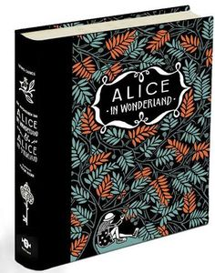

Name: Maggie
Age: 14
Hobbies:Video games
Aspirations :To be awesome
Favourite book: Alice In Wonderland by: Lewis Carroll
In the peculiar world of Alice the tale starts with Alice falling in a deep dark hole and experiencing thing she never thought were possible. Potions, shrinking,growing and falling deeper into this new world she eventually meets the Hatter and his freinds and soon they all become true friends. Soon enough she meets two special sisters who eventually become Queens. As everyone already knew, they are very different. There was the white Queen and her sister the wicked Queen of Hearts
The wicked Queen is very cruel, she wants everything for herself, but the white Queen arrives and changes everything in Wonderland and develops a liking for Alice. In the end, trouble srtikes as Alice has to kill a beastly creature as her only way of going back to her home.